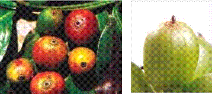
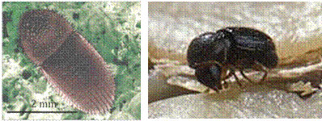

| Home |
| PEST OF COFFEE |
mAJOR PESTES |
| 1. White stem borer |
| 2. Red borer |
| 3. Shot hole borer |
| 4. Berry borer |
| 5. Green scale |
mINOR PESTES |
| 1. Mealy bug |
| Questions |
| Download Notes |
COFFEE :: MAJOR :: BERRY BORER
4. Berry borer: Hypothenemus hampei (Scolytidae: Coleoptera)
Distribution and status
Cosmopolitan and reported in 58 coffee growing countries. Under Indian conditions, Robusta suffers badly than Arabica as the latter is harvested early, and the pest build up is more when Robusta ripens.
Host range
Females take shelter in the seeds of Crotalaria, Lantana, Maesopsis, tamarind, tea etc, without feeding and breeding.
Damage symptoms
|  |
Presence of small round hole in the navel region of developed berry is the main symptom. Grubs tunnel in berry, feed on bean and damage endosperm by making small galleries near the main tunnel. As a result, tender berries drop.
Bionomics
Adult berry borer is a small black beetle with a sub cylindrical body covered with thick hairs. Female lays about 30 – 50 eggs in the tunnel. Eggs hatch in about 10 days. Larvae feed on the beans, making small tunnels. Larval and pupal periods last for 20 and 7 days respectively. Development from egg to adult takes 30 days. Sex ratio is 10:1. Mating takes place inside the berries.
|  |
Management
- Maintain thin shade and proper training of the plant.
- Harvesting should be perfect without any left over beans on plants sole.
- Harvest of the left over (gleaning) reduces the inoculum to a great extent
- Dry the berries to the following moisture level
Parchment - 10%, Arabica cherry - 10.5%, Robusta cherry - 11.0%
- Spray white muscardine fungus Beauveria bassiana
- Spray endosulfan 1.0 L in 500 L water/ha at the time of initial berry formation
- Seed beans may be transported after thorough disinfestations.